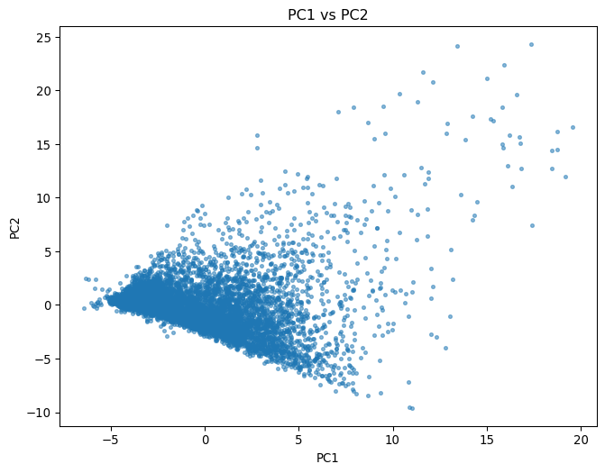
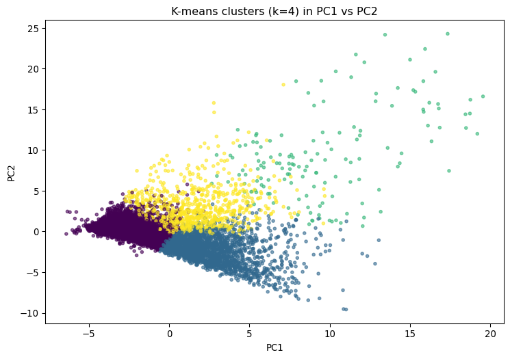
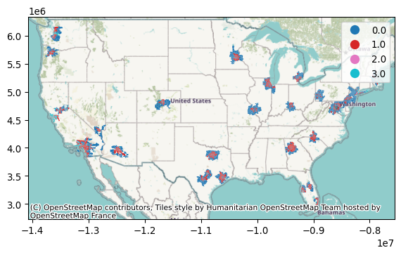

Principal Components number: 9
Variation explained: [0.34685209 0.23041372 0.11418052 0.06327196 0.04944255 0.04276308
0.02503939 0.02146856 0.01447887]
Cumulative variation explained: [0.34685209 0.57726581 0.69144634 0.7547183 0.80416085 0.84692393
0.87196332 0.89343188 0.90791075]Real Estate Market Analysis in the United States
Abstract
This report segments U.S. housing markets using PCA and K-Means, incorporating market features, points of interest, and demographic data. The methodology is documented, the principal components are interpreted, the clusters are profiled, and their spatial distribution is presented.
Proyect Overview
This report presents a segmentation of the U.S. real estate market based on ZIP code- and city-level data. We combine housing indicators (e.g., median sale/list price, inventory, days on market) with points of interest (POI) from OSM and demographic variables. Our workflow focuses on standardization, dimensionality reduction (PCA), clustering (K-Means), and geospatial visualization. The code is kept unchanged, and we prioritize a clear and reproducible interpretation of each step.
Key questions addressed: - Which latent dimensions best summarize the variation across locations? - How many distinct market segments (clusters) emerge? - What characterizes each cluster in terms of market signals, POIs, and demographic attributes? - Where are these clusters geographically located?
Note: This document does not include supervised price prediction. The emphasis is on discovering and interpreting the underlying structure. However, it would be a valuable future extension of the project.
Data Loading
We begin by loading the main dataset from Kaggle (HousingTS) and performing a brief exploration to better understand its structure. Here is the link to the dataset:
Since this project is being carried out in Positron, we visualize the dataset directly in the IDE and verify that the percentage of missing data is 0 across all variables. It is a clean dataset, ready for analysis.
Principal Component Analysis (PCA)
We apply PCA to capture the dominant variation across locations, retaining a predefined proportion of 90% explained variance.
Now we visualize the interpretation of PC1 and PC2. This helps us summarize the general gradients of market conditions, demographics, and points of interest.

Now we’ll perform the clustering and visualize the same segmented principal component scatter plot.
Clustering with k-means
k with best silhouette: 4
We can now clearly see how these clusters are distributed according to PC1 and PC2.
Now we’ll create a table to understand better these clusters. But first, we need to understand which variables provide the most information. Therefore, we measure the variance between the clusters and obtain the list of variables that contribute the most variance.
station 6.292687
restaurant 6.033795
supermarket 5.931101
bank 5.798149
park 5.090172
hospital 4.288910
school 3.899366
median_list_ppsf 2.905003
median_ppsf 2.526744
bus 2.178003
Median Home Value 1.285565
price 1.164426
median_sale_price 1.155048
Total Housing Units 0.807132
mall 0.791088
median_list_price 0.729817
Total Labor Force 0.695403
Median Commute Time 0.679908
Per Capita Income 0.656566
Total School Enrollment 0.654586
dtype: float64Once we have the variables that provide the most information for distinguishing and understanding these clusters, we generate the table.
| station | restaurant | supermarket | bank | park | hospital | school | median_list_ppsf | median_ppsf | bus | Median Home Value | price | median_sale_price | Total Housing Units | mall | median_list_price | Total Labor Force | Median Commute Time | Per Capita Income | Total School Enrollment | |
|---|---|---|---|---|---|---|---|---|---|---|---|---|---|---|---|---|---|---|---|---|
| cluster | ||||||||||||||||||||
| 0 | -0.22 | -0.26 | -0.36 | -0.29 | -0.37 | -0.32 | -0.36 | -0.34 | -0.33 | -0.27 | -0.42 | -0.30 | -0.30 | -0.72 | -0.28 | -0.24 | -0.72 | -0.71 | -0.30 | -0.71 |
| 1 | -0.07 | -0.08 | 0.04 | -0.03 | 0.06 | 0.03 | 0.11 | -0.20 | -0.18 | 0.04 | -0.12 | -0.23 | -0.22 | 0.98 | 0.12 | -0.19 | 1.00 | 1.00 | -0.10 | 1.01 |
| 2 | 4.96 | 4.89 | 4.86 | 4.80 | 4.51 | 4.14 | 3.95 | 3.33 | 3.09 | 2.96 | 1.70 | 1.70 | 1.69 | 1.21 | 1.77 | 1.32 | 0.98 | 0.93 | 1.15 | 0.85 |
| 3 | 0.12 | 0.34 | 0.42 | 0.35 | 0.46 | 0.42 | 0.40 | 1.26 | 1.22 | 0.41 | 1.67 | 1.50 | 1.50 | -0.03 | 0.45 | 1.21 | -0.03 | -0.05 | 1.24 | -0.07 |
Now we can interpret the results and define the 4 clusters.
Cluster 0 — “Lagging areas or low-urban-activity zones”
Practically all variables are negative, most between –0.2 and –0.7.
Low values stand out in:
station, restaurant, supermarket, bank, park, hospital, school → indicates low density of services and facilities.
Total Housing Units, Total Labor Force, Per Capita Income, Total School Enrollment also below average → less populated areas with lower economic dynamism.
Overall: this group represents peripheral or rural areas, with limited access to infrastructure, lower economic activity, and lower real estate prices.
Cluster 1 — “Stable residential areas”
Most z-scores are around 0, indicating average values relative to the full dataset.
Some variables slightly above average:
mall, park, school, Total Housing Units, Total Labor Force, Median Commute Time, Total School Enrollment → areas with moderate activity, somewhat more residential, and with a reasonable supply of services.
Variables below average in median_list_price, price, median_ppsf → somewhat lower prices than the overall average.
Overall: mid-range residential areas, balanced, with a good level of amenities but without extreme prices or service concentrations.
Cluster 2 — “Highly developed urban cores”
This is the most extreme and distinctive group:
z-scores from +4 to +5 in almost all key variables (station, restaurant, supermarket, bank, park, hospital, school).
Also high values in economic and real-estate variables (median_list_ppsf, median_ppsf, price, Median Home Value).
It clearly represents the central or premium areas of the city:
Very high concentration of services, infrastructure, and elevated housing prices.
High population density and economic activity.
This is the cluster with the greatest centrality, wealth, and urban development.
Cluster 3 — “Transition zones or emerging subcenters”
Moderate positive z-scores (between +0.3 and +1.5) in many variables.
Notable:
median_list_ppsf, median_ppsf, median_sale_price, Median Home Value, Per Capita Income → above average.
station, restaurant, supermarket, park, hospital → also somewhat higher.
Unlike cluster 2, the values are not extreme → consolidated but not top-tier urban areas, possibly intermediate or expanding neighborhoods, with rising prices and good accessibility.
Geospatial visualizations with geopandas.
We obtain the cartography from the U.S. Census here: https://www.census.gov/cgi-bin/geo/shapefiles/index.php?year=2020&layergroup=ZIP%20Code%20Tabulation%20Areas
Reading the geospatial data.
First we visualize the clusters across the entire U.S.

Then we create a interactive map zoomed into a city, in this case Boston (BOS).
Interactive Map of Boston.
(It would be cool to do this for all cities, but my PC isn’t able to render it.)
Cluster 0 (grey blue): Lagging areas or zones with low urban activity
These areas are mainly located on the periphery of the metropolitan region. They tend to correspond to less dense municipalities with lower availability of public transportation, services, and economic activity. They are characterized by more dispersed urban structures, lower intensity, and less dynamic housing markets. They represent the outer edge of Boston’s area of influence, where extensive suburban or semi-rural environments dominate.
Cluster 1 (Grey): Stable residential areas**
This group appears in both consolidated suburbs and areas with a good balance between services, housing, and connectivity. These are typical middle-class zones with sufficient amenities, moderate prices, and well-established residential patterns. They function as stable communities—neither the most affordable nor the most exclusive—offering intermediate urban standards.
Cluster 2 (Yellow): The wealthiest and densest areas
Located in Boston’s urban core and its immediate surroundings, this cluster highlights the areas with the highest economic intensity, service density, transportation access, and real estate value. It includes the most central, economically active, and attractive neighborhoods. Its limited spatial extent underscores its exclusivity: these are the metropolitan area’s key hubs, where wealth and urban dynamism concentrate.
Cluster 3 (Dark blue): Transition zones or emerging subcenters
Distributed around the main core, these areas show intermediate characteristics but with indicators pointing toward growth, appreciation, or urban transformation. They are neighborhoods or municipalities that do not reach the intensity of the central core but exhibit higher levels of services, real estate value, or economic activity than more traditional suburbs. They represent zones where new urban hubs are developing or where a gradual consolidation process is taking place.
| NOTE |
The geospatial classification shown on the Boston map comes from a clustering process performed at the national scale. In other words, the four clusters were not generated exclusively using Boston data, but with a much larger dataset that includes thousands of ZIP codes and metropolitan areas across the United States.
This means that the patterns detected —and therefore the assignment of each Boston area to one cluster or another— are based on comparisons among cities that are very different from one another, such as Los Angeles, Chicago, Dallas, Seattle, Miami, NY, or Denver. The model identifies groups according to national trends in housing prices, service density, transportation, income, commercial supply, and other socioeconomic indicators.
Because the clusters were formed using this broad and heterogeneous dataset, the resulting segmentation describes how Boston neighborhoods fit within the national real estate landscape, not just within their own local context. For example, Boston’s urban core appears in the highest-level cluster because, when compared to cities across the country, it consistently ranks among the areas with the greatest economic density and real estate value.
If one wanted a classification more closely aligned with Boston’s internal dynamics, the process could be repeated using data only from this city. Such an approach for instance, applying PCA for dimensionality reduction and then k-means to generate new clusters would produce groups tailored exclusively to Boston’s internal variation, without influence from patterns elsewhere in the country.